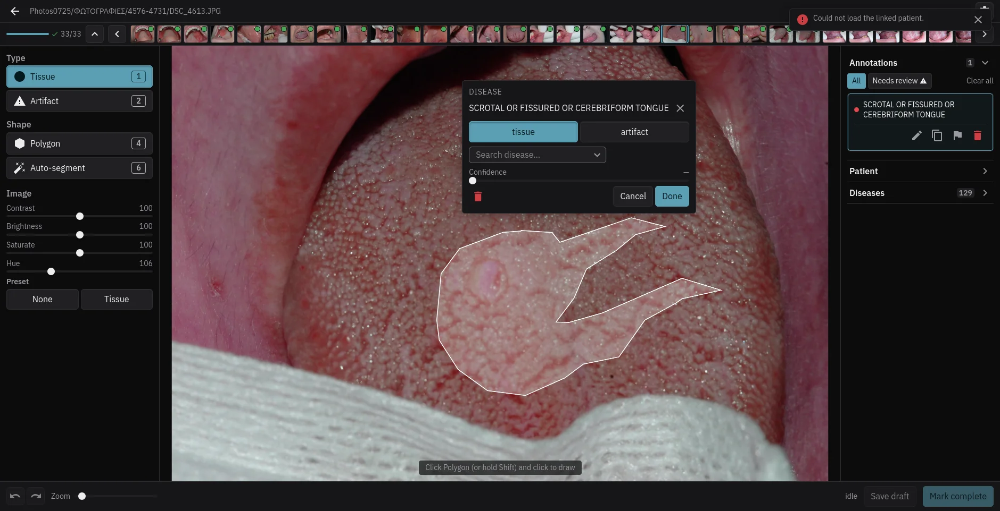

Diagoradisa
An annotation tool, a dataset pipeline, a model server, and a clinician app — built as one system.
Case study
Read
Fullstack engineer. I built Diagoradisa — an annotation tool, a dataset pipeline, a model server, and a clinician app — as one system. Then I measured what it actually does.
Open to fullstack roles · Updated 10 November 2026

Fig. 01The annotation editor, in production. Deep zoom, polygon tool, ICD-10 lookup, and batch progress.
Selected work
One is a four-service clinical platform built solo. The other is nine years of content, web, and marketing inside a Big Four firm. Both are here for the evidence, not the volume.
An annotation tool, a dataset pipeline, a model server, and a clinician app — built as one system.
Nine years as content and web lead inside a Big Four firm — I wrote the content, built the pages, and measured them.
Method
Three habits from the Diagoradisa work. Each one changed a decision, and each one is visible in the case study.
A metric is only useful when it can be traced to a run, a date, and a dataset. The ten-case product test is a product test, not a validation study: four correct, three wrong, three abstentions.
Box mAP@50 0.460 → 0.508 after the EXIF fix
The expensive bugs live between services. The dataset export and the prediction schema are written down, mirrored, and tested on both sides, so a change on one side cannot silently break the other.
Annotator → ML → Palmist, two contracts
A clinical safety layer shipped, was A/B tested on 210 cases, touched about 0.6% of detections, and showed no net benefit. I removed the engine, the flag, the API fields, and the loader.
210 cases · ~0.6% of detections · removed
Between roles. I am working through TypeScript, React, and Next.js. The first public app will be linked here when it ships.
Most recent: Diagoradisa, Jul 2025 – Oct 2026, as sole developer. No claim above what is built.
I answer every message from a real person. A short description of the problem is more useful than a job title.
dchrysomallis@bookscanner.gr